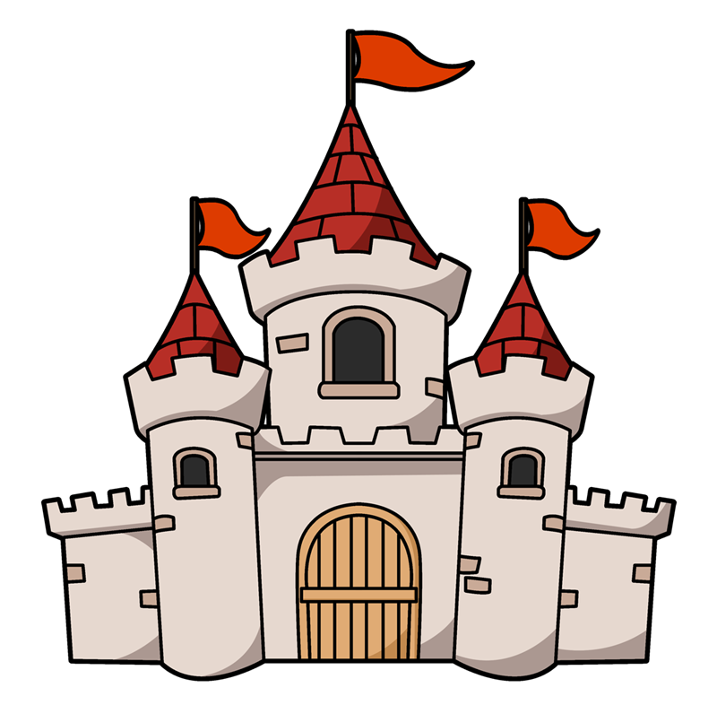

The Definitive Zombie Outbreak Prevention Plan
Home
Threats
Surroundings
Armed For Survival
Interactive Content
Additional Sources
Armed for Survival:
Practical Skills and Tips to Better Defend Yourself

Fortifications
Essential to all bases is a strong outer defense. Surrounding Parish Episcopal School is a wrought-iron fence taller than the height of your average zombie. As its structural integrity diminishes over time, you will need to augment your defenses. Here's how:
Move unusable vehicles (stripped of their necessary components) around weak areas of the fence to provide additional support and serve as barrier to trip up any zombies breaking through. Any spare scrap metal or wood can always be utilized to strengthen parts of the fence that may be sagging or on the verge of collapse. Spike barricades and noise traps are always viable options for protecting your perimeter and altering your guards of any oncoming zombies.
Food
Always keep your food supplies under close protection. Ration when necessary, and get rid of the perishable food first and foremost. When hunting becomes eventually necessary, learn how to preserve food to maximize your stores.
With the huge greenspace behind Parish's playground, farming is a viable and much-needed source of additional food that is fresh for once.
Water
Just like food, know when to save your water and always be prepared for a drought of any size.
Look into building a well for your encampment, or learn how to thoroughly purify and treat the water from Parish's nearby creek.
Tools
Scrap metal and wood should be conserved as much as anything so that makeshift tools can be made. From building equipment to farming implements, tools will be the foundation of your expanding society.
The Design Den and the Black Box Theater are your best friends in this area of survival.
Weapons
Use everything at your dispoal, and waste NOTHING. Only use louder weapons such as guns in desperate situations, as noise attracts massive hordes.
Improvised weapon ideas: locker door shields, scissor blades attached to blunt objects, slingshots, spears, swords, bows, sports padding (protection), etc. Be CREATIVE.
Community & Society
Set all held grudges and any petty squabbles aside. Negative opinions of someone can affect your behavior and cloud your judgement. You don’t want to persecute someone just because they wronged you at some point before the apocalypse.
Disregard previous social cliques. You will need teamwork to survive and it’s not the time to confine yourself to certain people.
First Aid
The Nurse's Office will be your initial source of medical equipment, but won't that forever. First Aid is as crucial as food or water, and supplies should be maintained.
If you are unsure how to treat a certain illness or injury, consulting the Libary may reveal some useful treatment information.